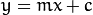
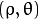
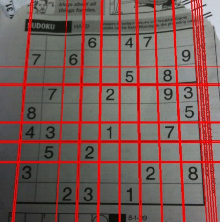

Hough Transform is a popular technique to detect any shape, if you can represent that shape in mathematical form. It can detect the shape even if it is broken or distorted a little bit. We will see how it works for a line.
A line can be represented as  or in parametric form, as where is the perpendicular distance from origin to the line, and  is the angle formed by this perpendicular line and horizontal axis measured in counter-clockwise ( That direction varies on how you represent the coordinate system. This representation is used in OpenCV). Check below image:
is the angle formed by this perpendicular line and horizontal axis measured in counter-clockwise ( That direction varies on how you represent the coordinate system. This representation is used in OpenCV). Check below image:
So if line is passing below the origin, it will have a positive rho and angle less than 180. If it is going above the origin, instead of taking angle greater than 180, angle is taken less than 180, and rho is taken negative. Any vertical line will have 0 degree and horizontal lines will have 90 degree.
Now let’s see how Hough Transform works for lines. Any line can be represented in these two terms, . So first it creates a 2D array or accumulator (to hold values of two parameters) and it is set to 0 initially. Let rows denote the and columns denote the . Size of array depends on the accuracy you need. Suppose you want the accuracy of angles to be 1 degree, you need 180 columns. For , the maximum distance possible is the diagonal length of the image. So taking one pixel accuracy, number of rows can be diagonal length of the image.
Consider a 100x100 image with a horizontal line at the middle. Take the first point of the line. You know its (x,y) values. Now in the line equation, put the values and check the you get. For every pair, you increment value by one in our accumulator in its corresponding cells. So now in accumulator, the cell (50,90) = 1 along with some other cells.
Now take the second point on the line. Do the same as above. Increment the the values in the cells corresponding to you got. This time, the cell (50,90) = 2. What you actually do is voting the values. You continue this process for every point on the line. At each point, the cell (50,90) will be incremented or voted up, while other cells may or may not be voted up. This way, at the end, the cell (50,90) will have maximum votes. So if you search the accumulator for maximum votes, you get the value (50,90) which says, there is a line in this image at distance 50 from origin and at angle 90 degrees. It is well shown in below animation (Image Courtesy: Amos Storkey )
This is how hough transform for lines works. It is simple, and may be you can implement it using Numpy on your own. Below is an image which shows the accumulator. Bright spots at some locations denotes they are the parameters of possible lines in the image. (Image courtesy: Wikipedia )
Everything explained above is encapsulated in the OpenCV function, cv2.HoughLines(). It simply returns an array of values. is measured in pixels and is measured in radians. First parameter, Input image should be a binary image, so apply threshold or use canny edge detection before finding applying hough transform. Second and third parameters are and accuracies respectively. Fourth argument is the threshold, which means minimum vote it should get for it to be considered as a line. Remember, number of votes depend upon number of points on the line. So it represents the minimum length of line that should be detected.
import cv2
import numpy as np
img = cv2.imread('dave.jpg')
gray = cv2.cvtColor(img,cv2.COLOR_BGR2GRAY)
edges = cv2.Canny(gray,50,150,apertureSize = 3)
lines = cv2.HoughLines(edges,1,np.pi/180,200)
for rho,theta in lines[0]:
a = np.cos(theta)
b = np.sin(theta)
x0 = a*rho
y0 = b*rho
x1 = int(x0 + 1000*(-b))
y1 = int(y0 + 1000*(a))
x2 = int(x0 - 1000*(-b))
y2 = int(y0 - 1000*(a))
cv2.line(img,(x1,y1),(x2,y2),(0,0,255),2)
cv2.imwrite('houghlines3.jpg',img)
Check the results below:

In the hough transform, you can see that even for a line with two arguments, it takes a lot of computation. Probabilistic Hough Transform is an optimization of Hough Transform we saw. It doesn’t take all the points into consideration, instead take only a random subset of points and that is sufficient for line detection. Just we have to decrease the threshold. See below image which compare Hough Transform and Probabilistic Hough Transform in hough space. (Image Courtesy : Franck Bettinger’s home page
Best thing is that, it directly returns the two endpoints of lines. In previous case, you got only the parameters of lines, and you had to find all the points. Here, everything is direct and simple.
import cv2
import numpy as np
img = cv2.imread('dave.jpg')
gray = cv2.cvtColor(img,cv2.COLOR_BGR2GRAY)
edges = cv2.Canny(gray,50,150,apertureSize = 3)
minLineLength = 100
maxLineGap = 10
lines = cv2.HoughLinesP(edges,1,np.pi/180,100,minLineLength,maxLineGap)
for x1,y1,x2,y2 in lines[0]:
cv2.line(img,(x1,y1),(x2,y2),(0,255,0),2)
cv2.imwrite('houghlines5.jpg',img)
See the results below: